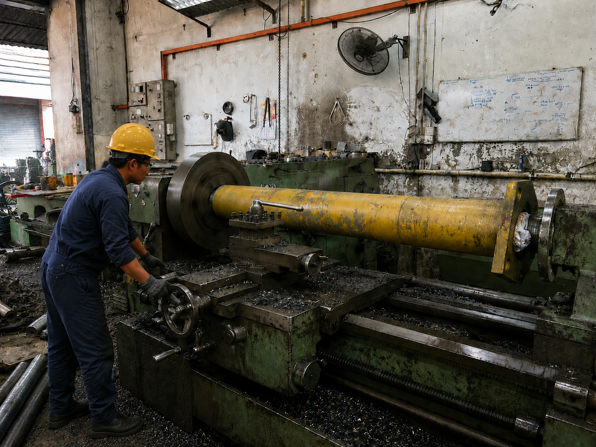
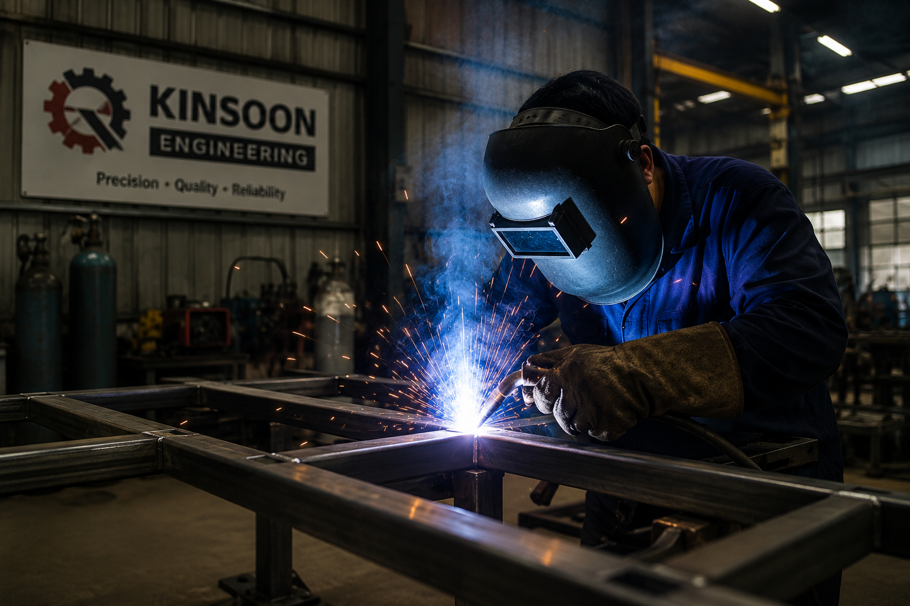
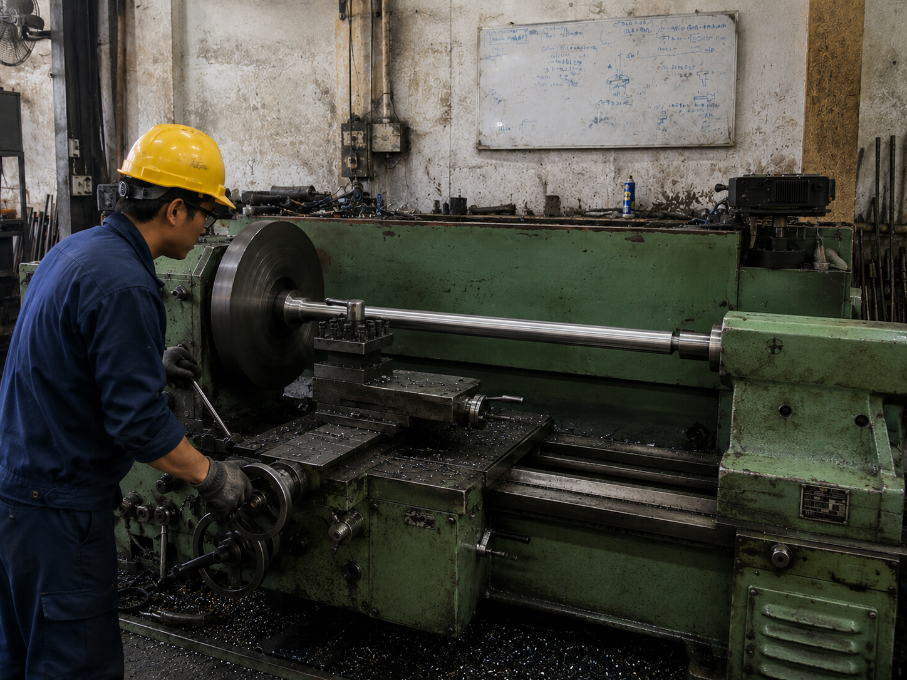

Lathe Machining, Welding Repair & Mechanical Part Fabrication
KINSOON ENGINEERING provides 车床加工、烧焊修理、机械零件制作/维修、渔船零件、农业机械、油压机机械维修与安装，以及不锈钢产品供应。
Machining, Welding & Repair Services
We focus on practical engineering works for machinery, factory equipment and metal parts.

Lathe Machining / 车床加工
Turning, facing, drilling, tapping, chamfering, keyway and custom part machining.

Welding Repair / 烧焊修理
Repair and modification for frames, brackets, machinery parts and steel structures.

Mechanical Parts
Fabricate and repair shafts, bushes, pulleys, rollers, brackets and machine components.

Repair & Installation
Fishing boat parts, agricultural machinery, hydraulic machine repair and installation.
Products We Supply
Click any product to view full introduction, specifications, PDF content and enquiry button.

Stainless Steel Sheet / Plate
304 Stainless Steel Sheet and Plate is suitable for durable support, corrosion resistance, fabrication and industrial use.

Aluminium Sheet / Plate
AA1100 aluminium sheet/plate in common thicknesses from 0.5mm to 3.0mm.

Ornamental Round Tube
Stainless steel ornamental round tube for handrail, furniture, frame, plumbing, signboard and industrial applications.

Ornamental Square Tube
Stainless steel ornamental square tube for frames, table framing, supports, display stands and fabrication works.

Ornamental Rectangular Tube
Stainless steel ornamental rectangular tube for framework, supports, signboard, furniture and industrial use.

Ornamental Oval Tube
Stainless steel ornamental oval tube for decorative frame, furniture, railing and fabrication works.
About KINSOON ENGINEERING
We are a machining and welding repair factory based in Teluk Intan, Perak. Our work covers mechanical parts fabrication, repair and installation for machinery and industrial customers.
Request Quotation
Please provide photo, drawing/sample, material, size, quantity, site location and installation requirement.
Send WhatsApp Enquiry